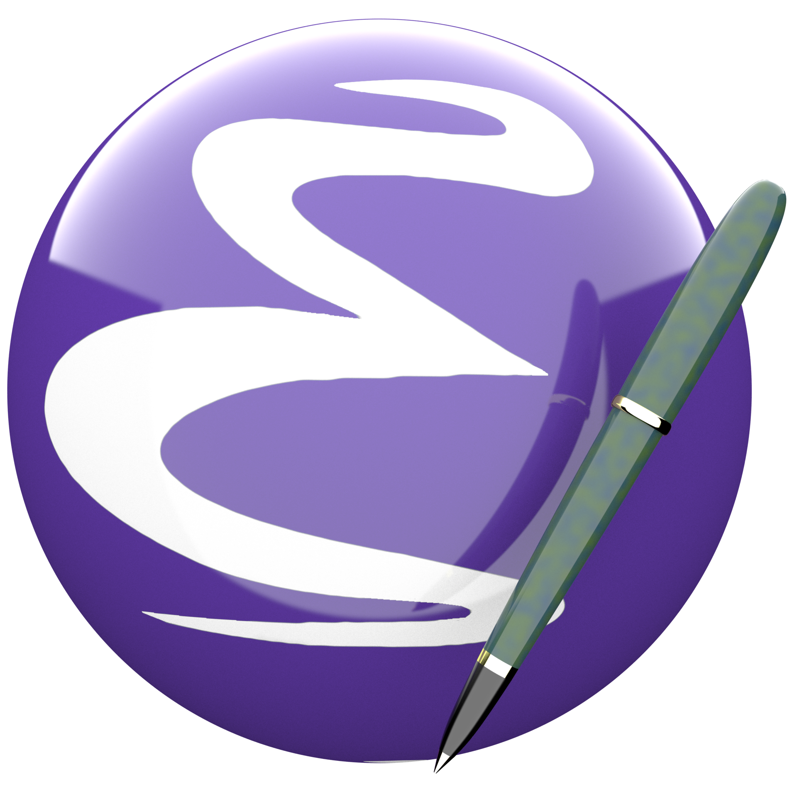

Cursos, Webs, Grupos, Tutoriales… Todo sobre Emacs y OrgMode

Muchos de vosotros me comentáis si os puedo recomendar un sitio donde iniciaros con Emacs y OrgMode. Como una imagen vale mas que mil palabras, la EmacsWiki me ha llevado al repositorio en GitHub de farliz/emacs-academia, donde están estos enlaces que te llevan a un magnífico Curso en Vídeo y en Castellano, donde ver un poco como funciona Emacs.
La verdad es que ahora no tienes escusas para aprender Emacs!!!
En la parte final del curso, adjunta una serie de comandos para descargarlos en Local. Yo los he reagrupado en un script.
He añadido unas conferencias de Medialab-Prado, un vídeo que resume muy bien OrgMode y una lista de vídeos de Rainer König sobre OrgMode en Inglés pero muy sencillos de seguir.
En la Parte final, añadido una serie de PDF's con comandos y documentación.
Es una información muy interesante, así que agradeciendo el magnífico trabajo de todas las fuentes, he añadido el contenido en la web para no perderlo de vista.
Webs, Canales y Grupos de Telegram, Reddit
Vídeos
Parte 1: Emacs Básico
- Introducción
- Buffers 1
- Primeros comandos 1
- Primeros comandos 2
- Modos mayores / Buffers
- Mini buffer / configuración de emacs
- init.el / configuración de Emacs
- Mas configuración
- Linea de modo
- Buscar palabras en un texto
- Buscar y reemplazar
- Importante
- ido-mode
- customize
- instalar paquetes (plugins)
- COPIAR / CORTAR / PEGAR / DESHACER
- helm-mode
- MOVIMIENTOS ESENCIALES
- COPIAR y PEGAR II
- Modos menores / auto-fill-mode
- solarized-theme / Opcional
Al finalizar esta sección, estarán en capacidad de seguir y entender la siguiente guía. Emacs for writers
Parte 2
- Corrección ortográfica 1
- Corrección ortográfica 2
- BibTeX
- AucTeX y RefTeX instalación
- Zotero
- LaTeX demo
- Movimientos esenciales II
- Evaluar código LISP C-x C-e
- Configuración Final
- Edición del texto
- Edición de texto II
- Formato I
- Corrección: En este video cuando digo C-h, quiero decir M-h
- Markdown
- ConTeX
- Helm-bibtex
- export-to-pdf
Curso Básico de ConTeXt
Descargar todos los Vídeos
Para descargar todos los videos pueden ejecutar las siguientes lineas en una terminal.
- mkdir emacs-videos && cd emacs-videos
- wget https://github.com/farliz/emacs-academia/blob/master/contenido.md
- grep -Eo '(http|https)://.+webm' contenido.md > videos.txt
- wget -i videos.txt
Canal en Goblinrefuge
Script para descargar los Vídeos
#/bin/bash/ mkdir emacs-videos && cd emacs-videos wget https://github.com/farliz/emacs-academia/blob/master/contenido.md grep -Eo '(http|https)://.+webm' contenido.md > videos.txt wget -i videos.txt
Vídeos, listas y conferencia sobre Orgmode
Mi primera configuración Emacs con elisp y orgmode
"Organiza tu vida" Emacs y Org-mode Madrid 2017 Medialab-Prado
"Organiza tu vida" Emacs y Org-mode Madrid 2017 Medialab-Prado
OrgMode tutorial
Manuales
- Guía sobre OrgMode
- Manual en PDF de OrgMode
- Manual en Inglés. Última versión OrgMode
- Manual sobre Emacs
- Manual mínimo Emacs
- Breve Introducción de Emacs
- Presentación Emacs y Latex
- Plantilla Emacs
Publicado por Angel el viernes 15 marzo del 2019 y actualizado el sábado 16 marzo del 2019
También te puede interesar:
- Simplenote en Emacs
- 2 Archivos de configuración| un Emacs
- OrgMode: Buscar solo en las Cabeceras
- Lee Super rápido en Emacs con Spray
- Con Emacs también podemos editar Markdown
- Kde Connect en Emacs
- Convertir de Markdown a Org Mode gracias a Pandoc
Powered by org-bash-blog
Writing in orgmode whith emacs

Este obra está bajo una licencia de Creative Commons Reconocimiento-NoComercial-CompartirIgual 4.0 Internacional.